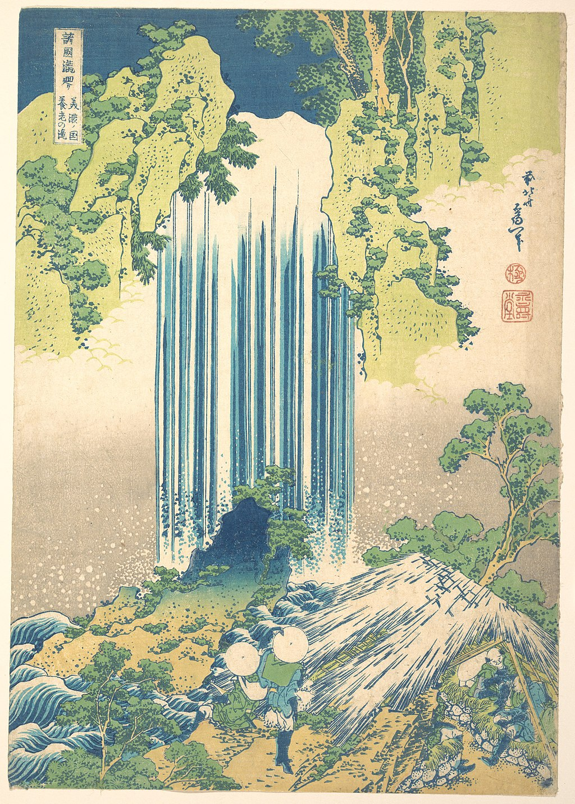

<head>
<meta charset="UTF-8" />
<meta name="keywords" content="drawing, painting" />
<meta name="description" content="drawings by Sunjy" />
<title>Sunjy</title>
<link rel="shortcut icon" type="image/x-icon" href="../../mImages/mCommon/favicon.ico" media="screen" />
<link rel="stylesheet" type="text/css" href="../../mCsses/mCommon/mCssA.css" />
<link rel="stylesheet" type="text/css" href="../../mCsses/mCommon/mCssB.css" />
<link rel="stylesheet" type="text/css" href="../../mCsses/mCommon/mCssC.css" />
<link rel="stylesheet" type="text/css" href="../../mCsses/mCommon/mCssD.css" />
<link rel="stylesheet" type="text/css" href="../../mCsses/mContent/mCssA.css" />
<link rel="stylesheet" type="text/css" href="../../mCsses/mContent/mCssB.css" />
<link rel="stylesheet" type="text/css" href="../../mCsses/mContent/mCssC.css" />
<link rel="stylesheet" type="text/css" href="../../mCsses/mContent/mCssD.css" />
</head>
<script type="text/javascript" src="../../mScripts/mContent/mContentAA.js" /></script>
<script type="text/javascript" src="../../mScripts/mContent/mContentAB.js" /></script>
<script type="text/javascript" src="../../mScripts/mContent/mContentAC.js" /></script>
<script type="text/javascript" src="../../mScripts/mContent/mContentAD.js" /></script>
<script type="text/javascript"></script> 
<script type="text/javascript">
document.write('<div class="mImgAbsolute"></div>');
/*
document.write('<p class="mFontSizeBColor" />From a white paper...</p>');
document.write('<table class="center"><tr><td>');
document.write('');
document.write('</td></tr></table>');
*/
</script>


<script type="text/javascript">
document.write('<p class="mFontSizeBColor" />Yōrō Waterfall in Mino Province </p>');
document.write('<p class="mFontSizeSColor" />Yōrō Waterfall in Mino Province by Katsushika Hokusai is a traditional Japanese Ukyio-e style illustration of two travelers looking at a waterfall and some travelers resting at the side in a shelter.<br><br>White and blue vertical lines pour down from the top of the waterfall. The travelers in front of the waterfall lookup, while protected by their round hats.<br><br>Well-balanced colors of blue, green, yellow, and white bring together many elements in the print.<br><br>The introduction of color pigments from Europe in the nineteenth century, primarily Prussian blue, gave Japanese printmakers new opportunities to express the dramatic effects of sky and water. <br></p>');
document.write('<table class="center" /><tr><td>');
document.write('<br>White and blue vertical lines pour down from the top of the waterfall. The travelers in front of the waterfall lookup, while protected by their round hats.<br><br>Well-balanced colors of blue, green, yellow, and white bring together many elements in the print.<br><br>The introduction of color pigments from Europe in the nineteenth century, primarily Prussian blue, gave Japanese printmakers new opportunities to express the dramatic effects of sky and water. <br>" />');
document.write('</td></tr></table>');
</script>


